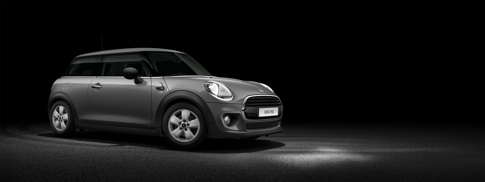

De Mini One
De Mini One is een van de meest bekende en best verkopende auto van het Britse automerk. Op deze pagina staat verschillende informatie over deze auto.

Quick Facts
- 0-100km/u 7,8sec
- 3 of 5 deurs
- Handgeschakeld / automaat
- Benzine
Mini One op een rijtje
- Modelvarianten: Mini One is een van de verschillende modellen van het standaard Mini model. Deze Mini is ook te krijgen in een Cooper en een Cooper S versie. Afhankelijk van de naam is de motor krachtiger. De One uitvoering is de meest zuinige en basic versie.
- Motorprestaties: De Mini One is dan wel de minst dik uitgevoerde Mini, toch is het een Mini die een erg leuke rijervaring met zich mee brengt. Ook staat deze uitvoering bekend om zijn uitstekende economische prestaties. Dit is het meest zuinige model en daarom erg gewaardeerd onder mensen die zuinig willen rijden.
- Kenmerkend ontwerp: Alle Mini's hebben natuurlijk een ontwerp waaraan je duidelijk ziet dat het een Mini is. Maar bij de Mini One is dit net een beetje meer aangezien deze rechtstreeks gebaseerd is op de originele Mini. Zo klein als de eerste Mini is die zeker niet meer. Toch is het nogsteeds een erg compacte en sportieve auto door het ronde uiterlijk.
- Aanpassingsmogelijkheden en technische snufjes: Ieder jaar weer brengt Mini nieuw optionele extra's en optiepaketten uit. Op deze manier kunnen kopers hun auto geheel naar eigen smaak personaliseren. Ook op technoligisch gebied loopt Mini niet achter. De modellen vanaf 2015 beschikken allemaal over een modern infotainmentsysteem, verschillende rijhulpsystemen en connectiviteitsmogelijkheden. Mini's vanaf 2017 beschikken standaard over super felle LED koplampen. Hiermee krijg je ontzettend goed zicht op de weg in het donker.
- Milieu: Mini One is er ook elektrisch. Dan heet de auto Mini Electric. Van buiten hetzeflde uiterlijk. Van binnen erg verschillend. De Mini Electric biet ongekende prestaties door zijn krachtige elektromotor.